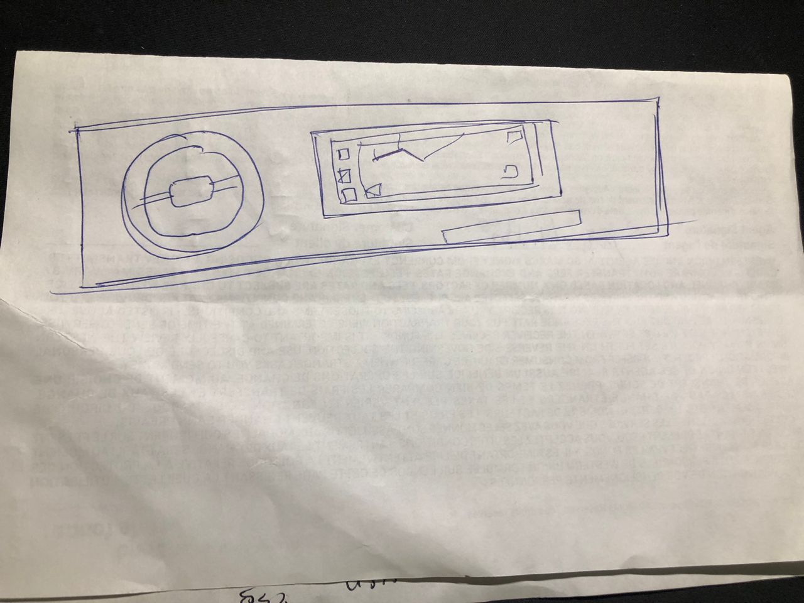
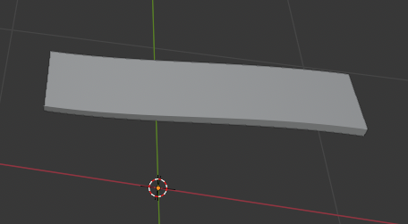
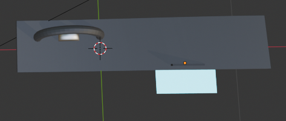
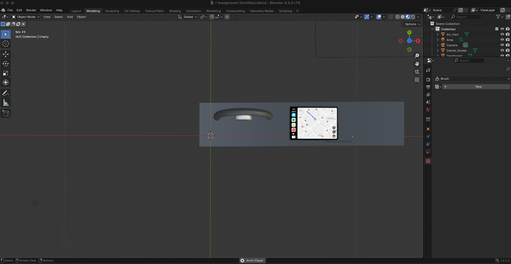
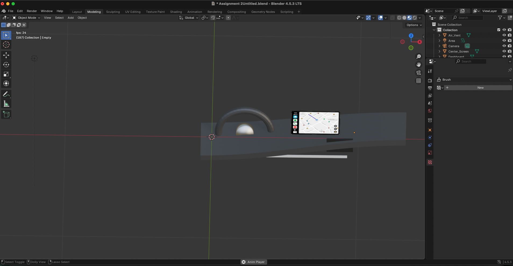

Brief Introduction of the Car Dashboard Project I am working on
The Waze Dashboard App project explores the redesign of the in-car interface to make navigation more intuitive, less distracting, and deeply user-centered. Many users appreciate Waze for its real-time traffic insights but find the dashboard cluttered or hard to focus on while driving. This redesign focuses on simplifying information hierarchy, improving glanceability, and aligning with the principles of safety and visual clarity in Human-Computer Interaction (HCI) design.
My goal with this project is to prototype a cleaner dashboard layout that highlights key driving data, route guidance, and adaptive interface behaviors in real-time all visualized through a 3D dashboard model inspired by modern EV displays.
Initial Sketch & Concept

This early sketch established the overall composition of Car dashboard Modeling I will be work on in Blender. It guided the design direction, focusing on the relationship between screen placement, steering wheel alignment, and the navigation panel’s ergonomics. The sketch captures how functionality blends with minimalism to create a more balanced driver experience.
Modeling the Dashboard

Using Blender, I modeled the dashboard geometry starting from a curved base mesh to mimic the flow of an actual car interior. The curvature helps visually frame the driver’s perspective while emphasizing simplicity and focus.

The steering wheel and central touchscreen were modeled next, carefully positioned for natural ergonomics. Scale adjustments ensured proportional realism, and materials like matte plastic and metallic accents were applied for fidelity.
Final Renders

The first render captures the dashboard from a **front-facing driver’s perspective**, emphasizing the Waze interface’s clarity and the balance between the physical and digital components of the design.

The second render provides a side perspective of the model, highlighting material details, lighting realism, and how the navigation screen integrates with the steering and dashboard curvature. This view demonstrates the depth and spatial design choices that enhance the user’s immersive in-car experience.
Takeaways
Through this project, I explored how product design principles intersect with in-car user experience. Working between UX and 3D visualization deepened my understanding of interface hierarchy, user context, and spatial design. The Waze Dashboard App redesign demonstrates how meaningful simplicity can enhance safety and usability without compromising aesthetics.